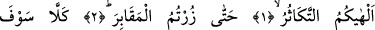
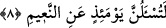

ÇOKLUK KURUNTUSU
SİZİ O DERECE OYALADI Kİ
Bismillâhirrahmânirrahîm
1. Çokluk kuruntusu sizi o derece oyaladı ki,
2. Nihâyet kabirleri ziyaret ettiniz.
3. Hayır! Yakında bileceksiniz!
4. Elbette yakında bileceksiniz!
5. Gerçek öyle değil! Kesin bilgi ile bilmiş olsaydınız,
6. (Orada) mutlakâ Cehennem ateşini görürdünüz.
7. Sonra âhirette onu çıplak gözle göreceksiniz.
8. Nihâyet o gün (dünyada faydalandığınız) nîmetlerden elbette ve elbette
hesâba çekileceksiniz.
Âyet-i kerimedeki, “elhâ” kelimesinin kökü olan “lehv”; insanı kendini ilgilendiren
ve ihtimâm göstermesi gereken şeyle meşgul olmaktan alıkoyan şey; kendisinde istifâde
bulunan herşey demektir. Arapçada; “elhâ an kezâ”; “onu, daha mühim olan şeyden
alıkoydu” demektir.
“Tekâsür” kelimesi, çoklukla övünmek, onunla yarışmak demektir. Bu kelime; bir
gurup “Biz daha çoğuz” derken, diğer gurup da “biz daha çoğuz” demesi anlamındadır.
Yâni çoklukla üstün gelmeye çalışmak ve böbürlenmek sizi oyaladı. Kavminizin
sayısının çok olması sizi gurûra sevketti, onunla meşgûl etti.
İbnu’ş-Şeyh bu kelime ile ilgili olarak der ki: “İlhâ” kökü, insanın eğlenceye, abes
şeylere ve çoklukla övünmeye yönelmesi demektir. Kul bunlara yönelince yönünü o
tarafa dönmüş, kendini onlara vermiş, ona doğru gitmiş demektir. Bilindiği üzere
insanın bütün benliğini ve fikrini herhangi bir şeye vermesi ve ona doğru gitmesi, diğer
şeylerden yüz çevirip uzaklaşmasını gerektirir.
“elhâkum” kelimesini “sizi meşgul etti, oyaladı” şeklinde tefsir etmek, bir şeyi lâzımı